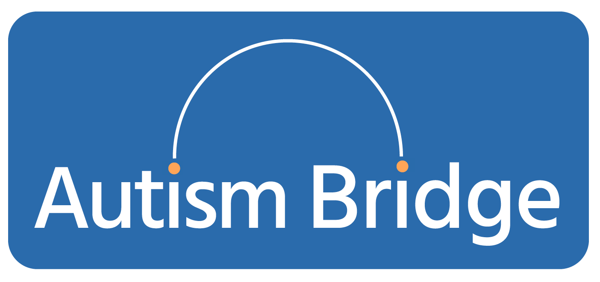
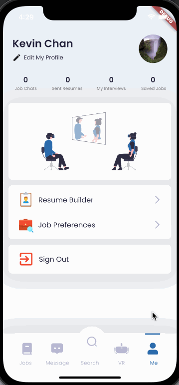
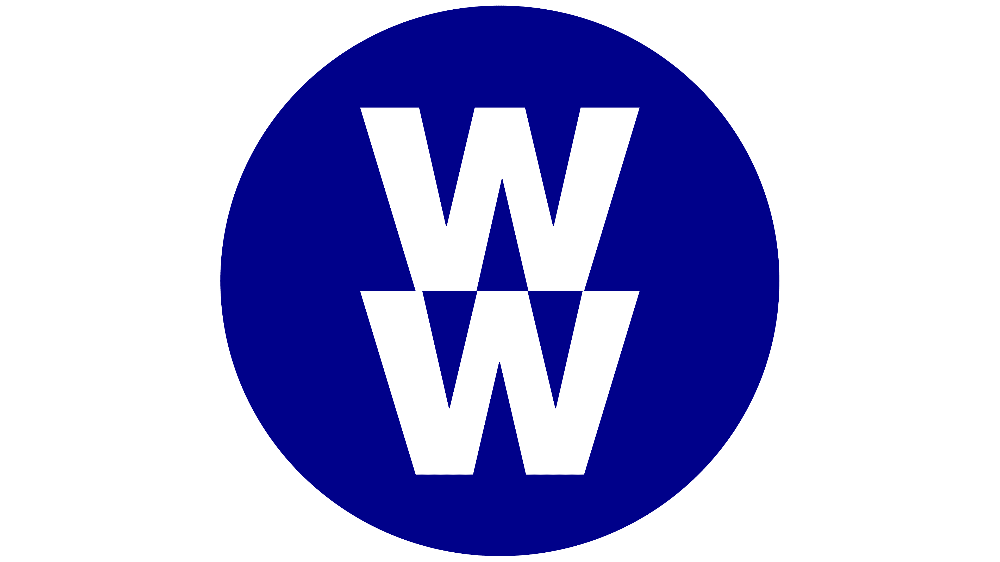
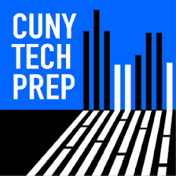
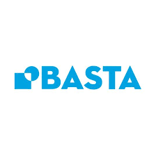
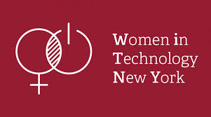
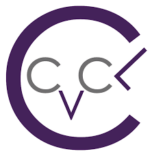

👋 Hello, I am Ai Hua.
I am a senior majoring in Computer Science at The City College of New York.
I'm an aspiring software developer based in New York.
Love to learn and explore all tech roles and the software development life cycle!
🚧 Project 🚧
-

Autism Bridge
Role: Product manager
Background: Approximately 85% of individuals who are on the Autism Spectrum Disorder are either underemployed or unemployed. After interviewing to over 30 autistic participants (in-person or virtually), the pain points to job searching are searching for the right job, resume and interview.
Autism Bridge is a mobile application that is built to closen the gap between recruiters from pro-diversity corporates/companies and unemployed autistic individuals. The application is built using Flutter, Dart and Firebase. The application consist of three main features: job board, resume builder and VR practice interview.
 -
Subway Talks
Role: Backend Developer
Subway is one of the most popular forms of transportation in NYC but we currently don’t have any application in the market which only focuses on open discussion of the NYC subway system. This app will provide a way for subway riders to talk freely about their experience of riding the subway.

💻 Experience 💻
-

WW / Weight Watchers
Role: Quality Engineer Intern
Designed and implemented a dashboard that collates over 150+ automation jobs running on Jenkins.
Purpose of the dashboard is to reduce manual work by the team and aid in the automation review process.
👩🏻💻 Association 👩🏻💻
- 
- 
- 
- 
☎️ Contact ☎️
Feel free to shoot me a message on Linkedin!
Talk to you soon! 😄